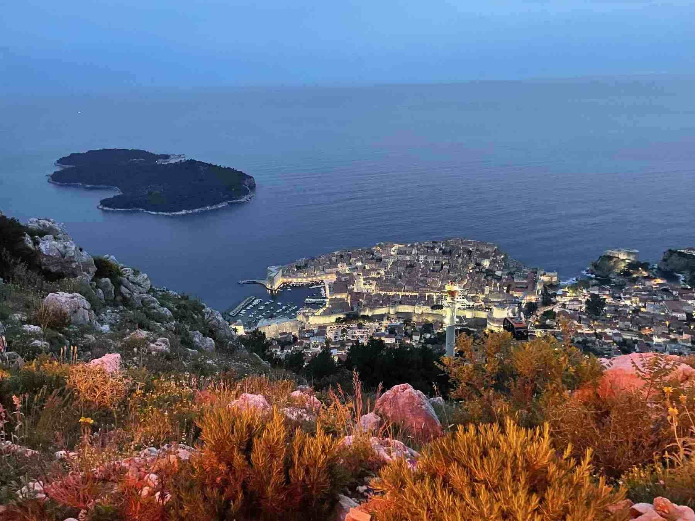
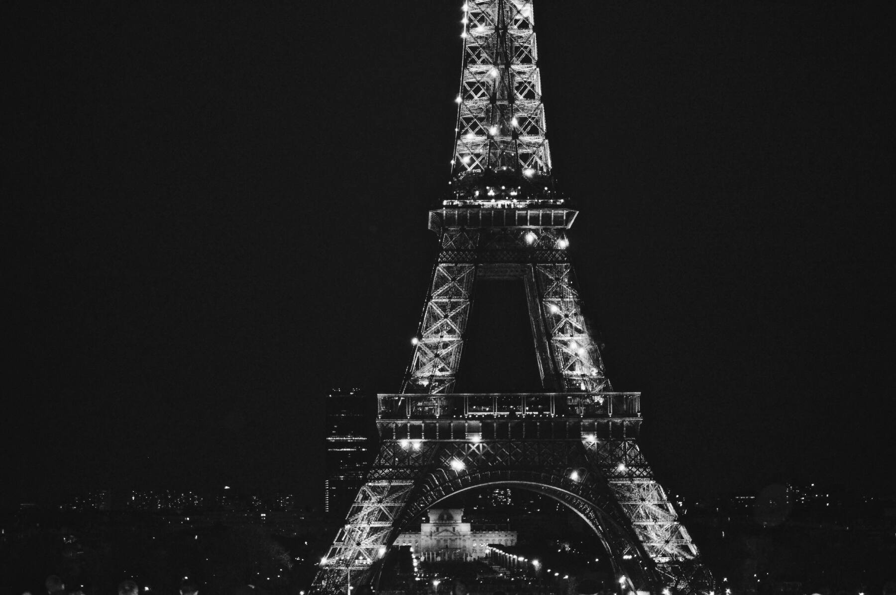

Country
London
So what do you think of when you hear London? Queen Elizabeth? The Royal Family? The London Bridge? Royal Guards? Here are some snapshots of London’s most timeless landmarks.

Big Ben
London Eye

Tower Bridge
Westminster Abbey
Italy
Italy is the most picturesque country I have seen. Italy has everything from ancient Roman architecture to the colorful island of Burano to the Italian countryside.

Siena, Italy

The Leaning Tower of Pisa
Arno River in Florence, Italy
Naples, Italy

The Duomo in Florence, Italy
Siena, Italy
The Colorful Island of Burano, Italy

Venice, Italy

Rome, Italy

Rome, Italy

Siena, Italy
Dubrovnik, Croatia
There is no place in the world like Croatia. There are no cars inside the walls of the city. If you're a Game of Thrones fan, you will immediately feel like you've been transported to King's Landing. The cliffs of Dubrovnik give you an impeccable view of the Adriatic Sea.

The Old Town

The Elaphite Islands

The Adriatic Sea

Cliffs of Dubrovnik
Dubrovnik at Night
Outside the City
Greece
Traveling to Athens and Mykonos was interesting because the city is so different from the islands. The city is crowded and industrial, yet the heart of greek mythology lies above it. Mykonos, on the other hand, is blue and white everything. It is such a relaxing place that every time I look at my photographs, I feel a wave of calmness.
Mykonos, Greece
Athens, Greece

Old Town of Mykonos

Mykonos at Sunset
Paris, France
Paris is a must on your bucket list. Every street in Paris is picturesque. The city's architecture is unique and stunning, from the Eiffel Tower to the Palace of Versailles.
The Eiffel Tower

Paris at Night

The Palace of Versailles

The Louvre

The Louvre
The Eiffel Tower